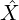
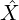

a composition rule:
Hom𝒞(Y,Z) × Hom𝒞(X,Y ) → Hom𝒞(X,Z)
(g,f)
 g ∘ f
g ∘ f
Category Theory Course Notes
Ettore Forigo
A category (1-category) 𝒞 consists of:
1 - A class Ob(𝒞) of objects of 𝒞
2 - ∀X,Y ∈ Ob(𝒞).
a class Hom𝒞(X,Y ) of morphisms from X to Y
3 - ∀X ∈ Ob(𝒞).
an identity morphism idX ∈ Hom𝒞(X,X)
4 - ∀X,Y,Z ∈ Ob(𝒞).
a composition rule:
Hom𝒞(Y,Z) × Hom𝒞(X,Y ) → Hom𝒞(X,Z)
(g,f)g ∘ f
Such that it satisfies the following axioms:
1 - Associativity of composition:
∀X,Y,Z,W ∈ Ob(𝒞).
∀f ∈ Hom𝒞(X,Y ),g ∈ Hom𝒞(Y,Z),h ∈ Hom𝒞(Z,W).
h ∘ (g ∘ f) = (h ∘ g) ∘ f
2 - Neutrality:
∀X,Y ∈ Ob(𝒞).
∀f ∈ Hom𝒞(X,Y ).
idY ∘ f = f ∧ f ∘ idX = f
A category is thin if parallel morphisms are always the same, meaning that there
is only one morphism between two objects.
In a thin category all morphisms are monic and epic.
An object I of a category 𝒞 is initial (dual of terminal, special case of a colimit
(of a functor from 𝒞 to the empty category))
⇕
∀X ∈ Ob(𝒞).
∃!f ∈ Hom𝒞(I,X)
An object T of a category 𝒞 is terminal (dual of initial, special case of limit (of
a functor from the empty category to 𝒞))
⇕
∀X ∈ Ob(𝒞).
∃!f ∈ Hom𝒞(X,T)
A morphism f : X → Y in a category 𝒞 (f ∈ Hom𝒞(X,Y )) is a monomorphism
(or monic in 𝒞) (dual of epimorphism)
⇕
∀Z ∈ Ob(𝒞).∀p,q ∈ Hom𝒞(Z,X).
f ∘ p = f ∘ q  p = q
p = q
Example:
In Set monomorphisms are precisely the injective maps.
Monomorphisms “can be cancelled” from the left.
A split monomorphism (dual of split epi) is a morphism f : X → Y such that
there exists a morphism g : Y → X such that:
g ∘ f = idX
Proposition: every split mono is a mono.
Proposition: in Set, every mono f : X → Y where X is inhabited is a split mono,
assuming LEM holds.
A morphism f : X → Y in a category 𝒞 (f ∈ Hom𝒞(X,Y )) is an epimorphism
(or epic in 𝒞) (dual of monomorphism)
⇕
∀Z ∈ Ob(𝒞).∀p,q ∈ Hom𝒞(Y,Z).
p ∘ f = q ∘ f  p = q
p = q
Example:
In Set epimorphisms are precisely the surjective maps.
Epimorphisms “can be cancelled” from the right.
A split epimorphism (dual of split mono) is a morphism f : X → Y such that
there exists a morphism g : Y → X such that:
f ∘ g = idY
Proposition: every split epi is an epi.
Proposition: in Set, every epi is a split epi ⇐⇒ assuming LEM holds.
A morphism f : X → Y in a category 𝒞 (f ∈ Hom𝒞(X,Y )) is an isomorphism
⇕
∃g ∈ Hom𝒞(Y,X).
f ∘ g = idY ∧ g ∘ f = idX
idX∀X ∈ Ob(𝒞) is always an isomorphisms for every category 𝒞.
Objects X and Y in a category 𝒞 are isomorphic
⇕
there exists an isomorphism between X and Y (X Y )
Y )
In Set, if there exists an isomorphism between X and Y , X and Y are called eqinumerous.
“The mother of all dualities”
Let 𝒞 be a category. Then its opposite category 𝒞op is the following category:
- Ob(𝒞op) : = Ob(𝒞)
- Hom𝒞op(X,Y ) : = Hom𝒞(Y,X)
- identities and composition inherited from 𝒞
idX ∈ Hom𝒞(X,X) = idXop ∈ Hom𝒞op(X,X)
f ∘ g : = gop ∘ fop
Observations / Remarks:
- An object I of 𝒞 is initial in 𝒞
⇕
I is terminal when regarded as an object of 𝒞op
- A morphism in 𝒞 is a monomorphism
⇕
it is an epimorphism in 𝒞op
injective maps in Set (monomorphism in Set) ↔ surjective maps in Set
(epimorphism in Set)
≤ ↔ ≥
∩ ↔ ∪
 ↔ ∅
↔ ∅
⊂ ↔ quotient set
× (cartesian product) ↔ disjoint union (tagged)
f ∘ g ↔ g ∘ f
A product (dual of coproduct, special case of limit) of two objects X and Y in a
category 𝒞 consists of:
- an object P of 𝒞
- a morphism πX : P → X in 𝒞
- a morphism πY : P → Y in 𝒞
such that for every object Q of 𝒞 together with morphisms φX : Q → X,φY : Q → Y
there is exactly one morphism Q → P such that the following diagram commutes:
φX = πX∘!
φY = πY ∘!
Remarks:
- πX and πY are called projection morphisms (also in limits).
- Products are always associative and commutative up to isomorphism.
- There is also the notion of the (co) product of zero, one, three, four, ... objects.
- The zero case of a product is just a terminal object, an object with exactly one morphism from each object.
A coproduct (dual of product, special case of colimit) of two objects X and Y
in a category 𝒞 consists of:
- an object C of 𝒞
- a morphism ιX : X → C in 𝒞
- a morphism ιY : Y → C in 𝒞
such that for every object D of 𝒞 together with morphisms χX : X → D,χY : Y → D
there is exactly one morphism C → D which renders the following diagram
commutative:
χX =! ∘ ιX
χY =! ∘ ιY
Remarks:
- Products in 𝒞op are precisely coproducts in 𝒞
- The zero case of a coproduct is the same as an initial object.
A (covariant) functor F : 𝒞→𝒟 from a category 𝒞 to a category 𝒟 consists of:
- an object F(X) ∈ Ob(𝒟) for each object X ∈ Ob(𝒞)
- a morphism F(f) : F(X) → F(Y ) in 𝒟 for each morphism f : X → Y in 𝒞
such that:
- ∀X ∈ Ob(𝒞).F(idX) = idF(X)
- ∀X,Y,Z ∈ Ob(𝒞).∀f : X → Y ∈𝒞,g : Y → Z in 𝒞.F(g ∘ f) = F(g) ∘ F(f)
Motto:
Functors ℐ→𝒞 are ℐ-shaped diagrams in 𝒞
Functors preserve commutative diagrams
Functors preserve isomorphisms
A contravariant functor 𝒞→𝒟 is a covariant functor 𝒞op →𝒟
The identity functor Id𝒞 on a category 𝒞 is the following functor:
Id𝒞 : 𝒞→𝒞
X X
X
f f
f
Let X0 be an object of a category 𝒞.
The constant functor Id𝒞 on X0 is the following functor:
Id𝒞 : 𝒞→𝒞
X X
X
f f
f
A forgetful functor ’forgets’ or drops some or all of the input’s structure or
properties ’before’ mapping to the output.
Examples:
- From vector space category to group category
- From vector space category to set category
- From abelian group category to group category
The discrete category associated with a set X, written 𝒟(X), is a category containing all the objects of X as objects, and no morphisms between different objects, just the identity morphisms.
Claim:
Any map between sets can be turned into a functor.
Let f : X → Y be a map between sets.
Consider the discrete categories 𝒟(X),𝒟(Y ).
Then f induces the following functor 𝒟(X) → D(Y ):
x f(x)
f(x)
idx idf(x)
idf(x)
A functor F : 𝒞→𝒟 is essentially surjective iff:
∀Y ∈ Ob(𝒟).∃X ∈ Ob(𝒞)|F(X) Y
Y
A functor F : 𝒞→𝒟 is faithful iff:
∀X,Y ∈ Ob(𝒞).
∀f,g : X → Y in 𝒞
F(f) = F(g)  f = g
f = g
Reformulation: iff
∀X,Y ∈ Ob(𝒞).
Hom𝒞(X,Y ) → Hom𝒟(F(X),F(Y ))
f F(f)
F(f)
is injective.
A functor F : 𝒞→𝒟 is full iff:
∀X,Y ∈ Ob(𝒞).
∀g : F(X) → F(Y ) in 𝒟
∃f : X → Y in 𝒞|F(f) = g
Reformulation: iff
∀X,Y ∈ Ob(𝒞).
Hom𝒞(X,Y ) → Hom𝒟(F(X),F(Y ))
f F(f)
F(f)
is surjective.
A functor is fully faithful iff it is full and faithful.
Reformulation: iff
∀X,Y ∈ Ob(𝒞).
Hom𝒞(X,Y ) → Hom𝒟(F(X),F(Y ))
f F(f)
F(f)
is bijective.
An elementary equivalence is a fully faithful, essentially surjective functor.
Categories are called equivalent iff there is an elementary equivalence between
them.
Remark:
Equivalent categories have exactly the same categorical properties.
A natural transformation η : F ⇒ G between two functors F,G : C → D
consists of:
- for each object X ∈ Ob(𝒞) a morphism ηX : F(X) → G(X) in 𝒟
such that for all morphisms f : X → Y in 𝒞, the naturality square commutes:
G(f) ∘ ηX = ηY ∘ F(f)
Motto:
Natural transformations are uniform families of morphisms.
Let 𝒞,𝒟 be categories.
The functor category [𝒞,𝒟] has:
- as objects: all functors 𝒞→𝒟
- as morphisms: Hom[𝒞,𝒟](F,G) : = 
- as identity: for the object F, the identity idF : F ⇒ F (idF )X : F(X) → F(X)
given by idF(X)
- as composition rule:
(ω ∘ η)X : = ωX ∘ ηX
ηX : F(X) → G(X)
ωX : G(X) → H(X)
(ω ∘ η)X : F(X) → H(X)
and ω ∘ η should be natural.
A category 𝒞 is small when Ob(𝒞) is just a set and not a proper class.
The 1-category of 1-categories, Cat has:
- as objects: all categories
- as morphisms: HomCat(𝒞,𝒟) : = 
- as identities Id𝒞 (the identity functor)
- as composition rule:
F : 𝒞→𝒟
G : 𝒟→ℰ
G ∘ F : 𝒞→ℰ
X G(F(X))
G(F(X))
f G(F(f))
G(F(f))
There are two issues with this definition:
- Size issue (in ZFC). (it’s too big, the objects don’t fit in a proper class?)
Remedies:
- just consider the category of small categories
- switch foundations
- It ignores natural transformations
Remedy:
Consider the 2-category of 1-categories
The 2-category of 1-categories has:
- as objects: all 1-categories
- as morphisms: functors
- as -2-morphisms / 2-cells: natural transformations
A cone (dual of cocone) of a diagram (functor) F : ℐ→𝒞 in a category 𝒞
consists of:
- an object A of 𝒞 (the ”tip” of the cone)
- for each object X ∈ Ob(𝒞), a morphism πX : A → F(X)
such that for all morphisms f : X → Y in ℐ, the triangle:
πY = πX ∘ F(f)
commutes.
A cocone (dual of cone) of a diagram (functor) F : ℐ→𝒞 in a category 𝒞
consists of:
- an object A of 𝒞 (the ”tip” of the cocone)
- for each object X ∈ Ob(𝒞), a morphism πX : F(X) → A
such that for all morphisms f : X → Y in ℐ, the triangle:
πX = πY ∘ F(f)
commutes.
A morphism between a cone (A,(πX)X) and a further cone (B,(ϕX)X) of a
diagram F : ℐ →𝒞 consists of a morphism f : A → B in 𝒞 such that:
πX = πY ∘ f
commutes.
A limit (dual of colimit) of a diagram F : ℐ→𝒞 is a terminal cone of
F, that is, a terminal object in the category of of cones of cones of F.
Remark:
A terminal object of 𝒞 is the limit of the unique functor from the empty category
to 𝒞.
A colimit (dual of limit) of a diagram F : ℐ→𝒞 is an initial cocone of F.
Remark:
An initial object of 𝒞 is the colimit of the unique functor from the empty
category to 𝒞.
Let f,g : X → Y . Then the equalizer of f and g is the following function:
Eq(f,g) = x ∈ X|f(x) = g(x)
A pullback P (also called fiber product of the domains over the codomain) (dual
of pushout) is the limit of a diagram consisting of two morphisms f : X → Z and
g : Y → Z with a common codomain.
It comes equipped with two natural morphisms P → X and P → Y .
A pushout P (also called fibered coproduct) (dual of pullback) is the colimit of
a diagram consisting of two morphisms f : Z → X and g : Z → Y with a
common domain.
It comes equipped with two morphisms X → P and Y → P.
A small diagram in 𝒞 is a diagram ℐ→𝒞 where ℐ is a small category.
A category 𝒞 is complete (dual of cocomplete) iff every small diagram in 𝒞 has a
limit (it has all small limits).
Assuming LEM, the only categories which have all limits or all colimits are (some) thin categories.
A category 𝒞 is cocomplete (dual of complete) iff every small diagram in 𝒞 has
a colimit (it has all small colimits).
𝒞 complete ⇐⇒𝒞op cocomplete.
A presheaf (plural presheaves) on a category 𝒞 is a functor 𝒞op → Set
Motto:
we picture a presheaf F on 𝒞 as an “ideal, fictional, object of 𝒞” in that we know
its relation to actual objects of 𝒞

 (X hat) is a presheaf:
(X hat) is a presheaf:
𝒞op → Set
T Hom𝒞(T,X)
Hom𝒞(T,X)
A presheaf F : 𝒞op → Set is representable iff:
∃X ∈ Ob(𝒞) : F 

Let F : C → D, G : D → C
Then, F ⊣ G “F is left adjoint to G”
(or G ⊢ F (“G is right adjoint to F”))
iff for every object X ∈ Ob(𝒞),Y ∈ Ob(𝒟) there is an isomorphism:
Hom𝒟(F(X),Y ) Hom𝒞(X,G(Y ))
Hom𝒞(X,G(Y ))
naturally in X and Y .
Every adjunction L ⊣ R gives rise to a monad:
The monad functor will be: M : = R ∘ L
The natural transformation:
η : Id ⇒ M
will be given by:
ηX : X → R(L(X))
which is in 1:1 correspondence with:
idRL(X) : RL(X) → RL(X)
since:
Hom(LA,B) Hom(A,RB)
Hom(A,RB)
which means that:
LA → B
is in 1:1 correspondence with:
A → RB
The natural transformation:
μ : M ∘ M ⇒ M
will be given by:
μX : RLRL(X) → RL(X)
induced from:
LRL(X) → L(X)
which is in 1:1 correspondence with:
idRL(X) : RL(X) → RL(X)
Remark:
The monad axioms should also be checked.
The “product-Hom adjunction” or currying adjunction is the following:
_ × S ⊣ HomSet(S, _)
Hom
Set(X × S,Y ) HomSet(X,HomSet(S,Y ))
HomSet(X,HomSet(S,Y ))
“∃” ⊣ “extending the context” ⊣ “∀”
The left adjunctions means that it is possible to freely convert between proofs of
the following kind:
“Assume ∃x ∈ X : A(x) ... Hence B.” (∃x ∈ X : A(x) ⊢ B)
and
“Let x ∈ X be arbitrary. Assume A(x) ... Hence B.” (A(x) ⊢x∈XB)
The right adjunction means that it is possible to freely convert between proofs of
the following kind:
“Let x ∈ X be arbitrary. Assume A ... Hence B(x).” (A ⊢x∈XB(x))
and
“Assume A. ... Hence ∀x ∈ X : B(x).” (A ⊢ (∀x ∈ X.B(x)))
A monoid consists of:
- a set M
- an element e ∈ M
- an operation ∘ : M × M → M
such that:
- ∀x ∈ M.x ∘ e = x = e ∘ x
- ∀x,y,z ∈ M.(x ∘ y) ∘ z = x ∘ (y ∘ z)
Equivalently, a monoid consists of:
- an object M
- a morphism 1 from a terminal object to every other object.
- a map M × M → M
such that certain diagrams commute.
A monoidal category (sometimes called tensor category) consists of:
- a category 𝒞
- a functor ∗ : 𝒞×𝒞→𝒞
- an object 1 ∈ Ob(𝒞)
- natural isomorphisms:
- 1 ∗ X X
X
- X ∗ 1 X
X
- X ∗ (Y ∗ Z) (X ∗ Y ) ∗ Z
(X ∗ Y ) ∗ Z
such that certain coherence conditions are satisfied.
Remark:
In any monoidal category one can speak of monoid objects.
A monad over a category 𝒞 consists of:
- a functor M : 𝒞→𝒞
- a natural transformation η : Id𝒞⇒ M
- a natural transformation μ : M ∘ M ⇒ M
such that certain diagrams commute.
Every monad is given rise to by an adjunction (always of a free and forgetful
functor pair).
There are two ways of factorizing a monad into adjoint functors, one is the Kleisli
category.
The Kleisli category 𝒞M of a monad M in a category 𝒞 is the following
category:
- objects: objects of 𝒞
- morphisms: Hom𝒞M(X,Y ) : = Hom𝒞(X,M(Y ))
The category nCob (“the cobordism category”) has:
- as objects (n − 1)-dimensional oriented manifolds
- as morphisms: n-dimesional cobordisms between those
Hilb is the category of Hilbert spaces (vector spaces with additional
structure).
Hilbert spaces are important in quantum physics, because they can be used to model “slices” of spacetime.
A topological quantum field theory (in spacetime dimension n) is
a monoidal functor between the monoidal categories nCob and Hilb:
Z : nCob → Hilb
Z maps each (n − 1)-dimensional slice of n-dimensional spacetime to the Hilbert space modelling that slice, and Z maps a morphism X → Y in nCob to the “propagator” Z(X) → Z(Y ).